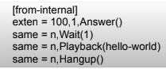
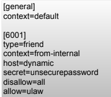

◉ Instalação do Asterisk
• O Asterisk é um software de PABX que usa o conceito de software
livre. Ele é licenciado através de uma licença do tipo GPL
• O Asterisk permite conectividade em tempo real entre a rede pública
de telefonia e redes VoIP.
• A rede pública de telefonia é freqüentemente referida pela sua
sigla em inglês PSTN (Public Switched Telephony Network).
• Hardware - O Asterisk usa o processador de forma intensa para fazer o
processamento os canais de voz, isso deve ser levado em consideração na
elaboração do seu projeto.
• Sistema Operacional - O Asterisk foi desenvolvido para rodar em Linux,
embora possa ser usado em BSD ou OS X.
• Obtendo códigos fontes do asterisk
• http://downloads.asterisk.org/pub/telephony/dahdi-linux-complete/dahdi-linux-
complete-current.tar.gz
• http://downloads.asterisk.org/pub/telephony/libpri/libpri-1.4-current.tar.gz
• http://downloads.asterisk.org/pub/telephony/asterisk/asterisk-11-current.tar.gz
• Descompacte os arquivos no diretório /usr/local/src:
# cd /usr/local/src
# tar -zxvf libpri-1.X.Y.tar.gz
# tar -zxvf dahdi-linux-complete-2.X.Y+2.X.Y.tar.gz
# tar -zxvf asterisk-11-current.tar.gz
• Instale os headers do Kernel em execução:
#apt-get install linux-headers-`uname –r`
• Instale o módulo DAHDI:
# cd /usr/local/src/dahdi-linux-complete-2.X.Y+2.X.Y
# make
# make install
# make config
• Instale o Módulo LibPRI
# cd /usr/local/src/libpri-1.X.Y
# make
# make install
• Checando os requisitos para instalação do Asterisk:
# cd /usr/local/src/asterisk-11.X.Y
# ./configure
O configure checa todas as dependências individualmente, para poupar tempo o
Asterisk possui um script para instalar todas elas de uma vez, caso o configure retorne
alguma dependência, execute os passos abaixo antes de rodar o configure novamente:
# cd contrib/scripts
# ./install_prereq install
• O Asterisk permite a personalização dos módulos a serem
instalados:
# make menuselect
• Instale o Asterisk:
# make
# make install
# make samples
# make config
• Configure o Logrotate
# make install-logrotate
• Verificar a instalação
# /etc/init.d/asterisk start
# /etc/init.d/asterisk status
• Criar usuário asterisk
• adduser --system --group asterisk
• Incluir as linhas abaixo no arquivo /etc/init.d/asterisk:
AST_USER="asterisk"
AST_GROUP="asterisk"
• Modificar dono dos arquivos
• chown --recursive asterisk:asterisk /etc/asterisk
• chown --recursive asterisk:asterisk /var/lib/asterisk
• chown --recursive asterisk:asterisk /var/log/asterisk
• chown --recursive asterisk:asterisk /var/run/asterisk
• chown --recursive asterisk:asterisk /var/spool/asterisk
• chown --recursive asterisk:asterisk /dev/dahdi
• /etc/asterisk/extensions.conf

• /etc/asterisk/sip.conf
